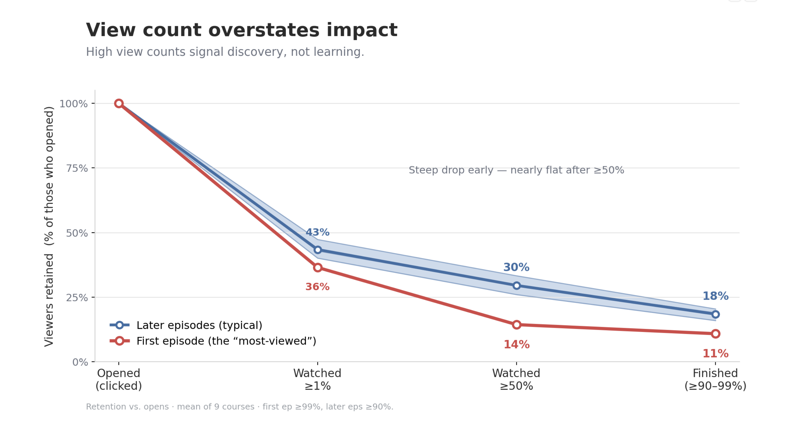
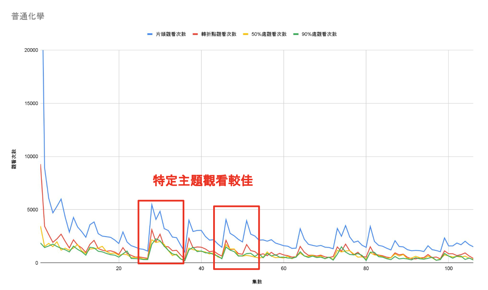
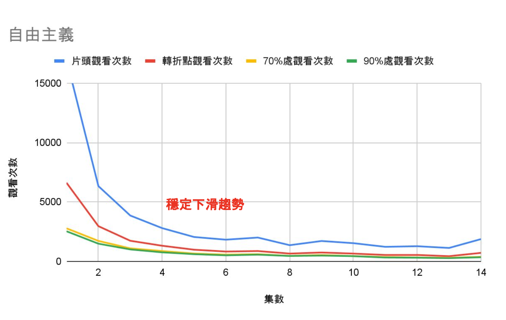

NTU OpenCourseWare Metrics Redesign
Rethinking how NTU's OpenCourseWare measures whether a course video actually works.
The Problem with View Count
NTU's OpenCourseWare channel has 36M+ cumulative views, but the academic office judged each course video almost entirely by view count in the past. Many viewers click the first episode and drop off within the first 1%, so we can't assume a high-view video means people actually learn from it. I set out to define a better measure of an "effective" course video, then translate it into content decisions.
Key Findings
What the Data Shows
View count overstates impact
Viewing drops sharply after the first 1% mark, but the 70–90% retention curves nearly converge. "Most-viewed" videos are mostly first episodes that people sampled without finishing, so high view counts signal discovery, not learning.

Retention vs. opens, averaged across 9 courses. First episodes get the most clicks but shed viewers faster: only 11% finish, versus 18% for later episodes. The curves flatten after ≥50%, meaning viewers who make it that far usually see it through.
Course type drives very different viewing behavior
Humanities courses (~2-hour, stories are sequential) shed viewers fast then stabilize to a small loyal core by episode 5. STEM courses (~50-min, topic-based) show selective, unit-by-unit viewing with higher per-episode completion. These two engagement patterns call for different content strategies.

STEM (General Chemistry, 100+ episodes) — a steady low baseline with visible spikes on specific topical episodes. Viewers arrive for particular units, not the full series.

Humanities (Liberalism, 14 episodes) — a smooth decay from the opening episode as viewers who miss earlier context drop off. The remaining viewers stabilize into a loyal core.
Audiences differ sharply by subject
For this channel, the Humanities audience is significantly older (with the 55–64 age group being the largest. Surprisingly, students are not the primary audience), whereas the STEM audience is much younger (76% aged 18–24). These are essentially two different products for two distinct user bases, so content design and distribution should reflect that.
Playlists are an underused growth lever
Data showed that 30–46% of views come directly from playlists rather than recommendations. Based on this, I strongly recommend restructuring playlist architecture to significantly improve viewer retention at minimal cost.
Recommendation
Measures
1 — Replace view count with an engagement-based scorecard
Adopt completion rate, retention at key marks (70% / 90%), and average view percentage as the primary measures of video effectiveness. Raw view count should be treated as a discovery-reach signal only, separate from quality assessment. This reframes what a "successful" video looks like internally.
2 — Design content to match course-type behavior
Humanities: segment long sequential lectures into shorter standalone units to reduce early drop-off. STEM: lean into the topic-based structure that already works. Viewers arrive for specific units.
3 — Invest in playlist structure as a discovery channel
With 30–46% of views originating from playlists, so organizing them well is a measurable growth lever.. Arranging videos in order, grouping them by topic, or combining different courses can boost both reach and retention.
Methodology & Role
How the Analysis Was Done
Data was exported from the NTU OCW YouTube Analytics dashboard covering 100+ course videos. Python was used to clean, merge, and compute derived metrics (completion rate, retention at threshold marks, average view duration %). Excel was used for segmentation, pivot analysis, and visualization prototyping.
Analyzed video retention at the 1%, 50%, 70%, and 90% completion marks across humanities and STEM courses to identify key viewer behavior patterns by demographic. I presented content recommendations to the NTU OCW team, proposing a shift from traditional view counts to an engagement-focused scorecard, which was accepted by the team.
- Python
- Excel
- YouTube Analytics
- Retention Curve Analysis
- Audience Segmentation
- Content Strategy
- Ed-tech Analytics
Next